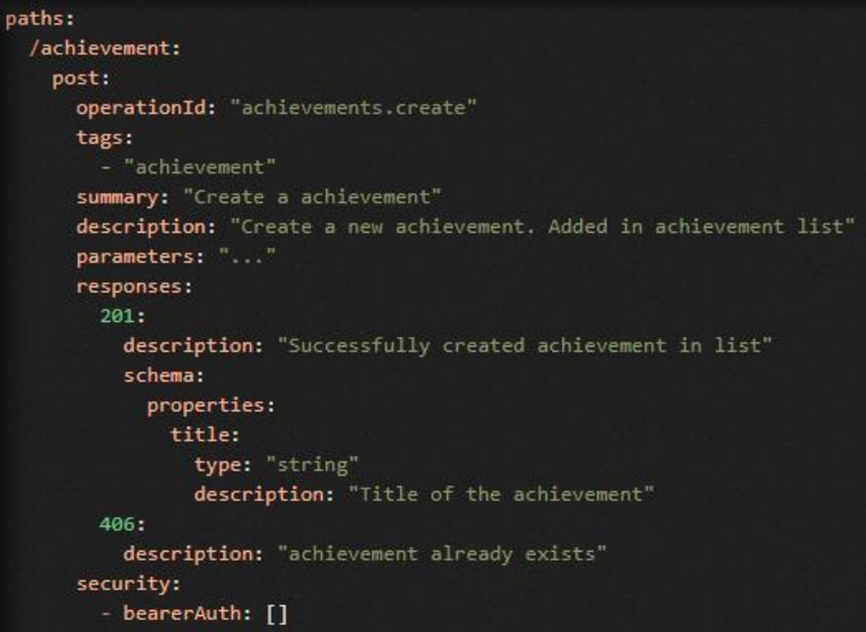
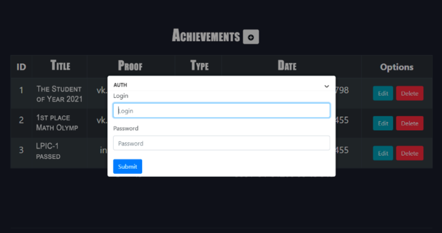

本文系毕业设计中需要进行的外文翻译工作，因该文对于整个Web服务做了一个较为全面的综述与总结，因此将翻译成果放到这里和大家分享。
摘要
本文讨论了开发用于保存学生成就日志的安全的RESTful Web服务API的关键点，分析了使用Web服务的相关性，给出了Web应用的分类，考虑了单页应用程序架构的特征，给出了应用程序接口架构风格的特征比较，考虑了RESTful API服务需要满足的要求，分析了API安全的基本原理，给出了REST API开发过程中可能出现的主要漏洞列表，给出了流行的认证方案（方法）的概述，给出了Python编程语言的Web框架的特点比较，列出了开发Web API应用程序中使用的主要工具，介绍了使用Flask微框架和用于描述Swagger规范的工具在Python中创建RESTful Web服务API的安全原型的过程，详细检查了配置应用程序的过程，列出了保护Web应用程序、数据库和Web服务器设置的主要建议，考虑了保护已开发的Web应用程序的关键点，并且对以上所得结果进行了分析。
简介
在现代社会数字全球化的背景下，商业性质的解决方案向线上进行大规模过度的趋势变得越来越明显[1]。从前开发的软件也正在以Web交互形式不断重建。当创建新的服务时，基于Web的解决方案要比移动端和桌面平台更优。这种转变是由软件和对端的用户之间更加方便、易于访问的交互机制所不断推动的[2]。在线资源不会对用户提出严格的硬件要求（存储空间、内存大小、中央处理器（CPU）能力），也不会绑定只能与某些特定平台（个人计算机、智能手机、专用设备）交互。它们通过专门的互联网浏览器来组织工作。此外，线上交易的份额正在不断增长，这也导致了对于网站和网络应用程序的关注和需求不断增加[3]。
但是，网站逻辑的复杂性也在不断上升。因此，普通的静态网站或者基于内容管理系统（Wordpress、Joomla、IC-Bitrix）的动态解决方案在非线性平台或者电子商务的细分领域变得不再能满足客户的需求。同时，在功能方面以及软件产品的开发、扩展、保护和维护过程的效率方面，上述方案也都出现了许多问题。最后的结果就是，静态网站几乎完全被功能齐全的Web应用程序所取代。
Web应用程序不再是HTML页面、样式文件、脚本文件和媒体文件的集合。Web应用程序基于功能和外观分离的C/S架构。应用程序的业务逻辑在一个特殊的专用服务器（后端）上执行，而客户端则与用户的因特网浏览器上的用户界面进行交互（前端）。这种方法允许实时生成HTML内容，并且能够使得在查看的网页上重新加载的次数最少。几乎所有的现代电子商务网站、社交网站、即时通讯工具、在线程序、论坛和搜索引擎都是Web应用程序[4]。
根据主要组件的类型，Web应用程序可以分为以下几种类型：后端、前端和SPA。
后端应用程序（服务端应用程序）集中了应用程序的主要功能和逻辑，并且与数据库交互。它们可以使用多种编程语言进行开发，其中最主流的有：Python、Ruby、PHP、C#（.NET）、Node.js。但是，如果不使用被称为Web框架的特殊工具，那就几乎不可能实现生产可用的解决方案。上面列出的每种编程语言都有自己的一组用于创建Web应用程序的框架：Python（Django、Flask、FastAPI、Tornado），PHP（Laravel、Simfony、Yii2），Ruby（Ruby on Rails、Sinatra），Node.js（Express.js），C#（ASP .NET Core）。
框架承担了一部分开发人员的任务，并且能够提供典型的重定向、身份验证、注册和其他功能从而保证应用程序的安全性。该应用程序部署在专门配置的Web服务器上，并且独立地生成HTML显示文件（但是，在大多数情况下，浏览器还是会重新加载页面）。
前端应用程序（客户端应用程序）直接工作在用户的Web浏览器中。它们是使用JavaScript、TypeScript和Vue.js、ReactJS、AngularJS编程语言开发的。它们适用于应用程序不使用数据库并且客户端信息不超过一个会话的情况下。它们全权负责HTML代码的呈现。
SPA（单页应用程序）是上述解决方案的一个组合，它将一个Web应用程序分为两个（前端和后端），并且组织它们之间的交互。后端部分处理逻辑和请求，并同数据库一起工作；前端部分则根据后端传来的数据形成一个对外的视图，并且将结果呈现在浏览器中。应用程序的客户端和服务端之间的信息交互通常通过专门开发的应用程序编程接口（API）进行。几乎所有的现代Web应用程序都基于SPA的概念。
API是一组应用程序交换信息和传输数据的方法和规则。通常来说，它们是一个程序用于与另外的程序交互的类、函数、结构体。API不仅有助于组织交互，它还在保证交互的安全性方面发挥着重要作用。这样的接口隐藏了服务实现的细节，并且在开发人员提供的框架内工作。使用应用程序程序接口，可以对用户可用的操作施加限制，指定输入输出的数据[5]。此外，API还有许多反映接口交互工作架构风格的功能。
此类应用程序由于逻辑复杂，并且由许多组件组成，因此系统安全性被显著影响[6]。组织安全性时需要考虑许多因素。除了前后端的安全性外，还应该专注于开发安全的API。入侵或者意外的客户端错误可能导致服务不可用、数据丢失或整个应用程序无法运行。这会严重影响用户体验，并且给企业带来巨大损失。因此，在开发任何Web服务时，确保安全性都是一个热门话题。
本文致力于开发安全的RESTful API Web服务，使用Python3编程语言和Flask Web微框架生成学生成绩列表。
材料和方案
API的实现基于使用的协议和软件规范，为传输的消息构建了句法和语义规则。这些规范构成了API的架构。
目前有许多包含标准化模式和数据交换规则的架构风格。最常见的架构风格是RPC（gRPC）、REST、SOAP和GraphQL。
以RPC（远程过程调用）规范为代表的架构风格允许在HTTP API的上下文中远程调用函数。当远程调用特定过程时，客户端通过为服务器生成特殊消息来获取大部分功能。服务器反序列化收到的消息[7]，启动请求的函数并且返回结果。gRPC是RPC的新版本，旨在解决上一版本规范存在的一些问题。gRPC还添加了许多新功能，例如负载均衡、消息追踪等。此外，这个新标准开始使用了protobufs的概念，并且运行在HTTP/2之上。Protobuf是一个proto文件，它是一个字典，数据在此基础上以特殊的二进制格式进行编码和解码。也就是说，它是一种新的序列化格式（JSON/XML的替代品），用于客户端和服务器之间的信息交换[8]。该创新允许在实时大量数据交换的环境中保持高性能，它也能够使用SSL/TLS、OAuth 2.0、身份认证用令牌、或者是你自己编写的安全身份认证实现。
RPC（gRPC）的好处：
- 简单的交互机制；
- 添加函数并随后转换到对端的能力；
- 高性能；
- 与安全工具交互的能力。
RPC（gRPC）的缺点：
- 抽象程度低，导致重用困难；
- 进行规格化较困难；
- 在查询的自省上存在问题
- 由于无法完全隐藏API实现的细节而降低了安全性
RPC（gRPC）最适用于开发用于内部通信的高性能微服务[9]，以及为远程控制系统创建API，例如在物联网领域等。
GraphQL是Facebook开发人员引入的另一个规范。GraphQL专注于图形格式的数据表示。与关系数据库中表格视图的创建者不同，GraphQL的开发人员借鉴了MongoDB等面向文档的数据库，开创了一种文档结构。该实现基于相互引用（边）的实体（节点）图。
首先，构建一个方案来描述（使用SDL语言的特殊语法）预期响应中的确切查询和数据类型。具有这种指定方案的客户端，甚至能够在发送查询之前，就可以确保服务器对其有答案。在后端，操作根据方案进行解释，并以JSON格式发送响应以及请求的数据。因此，我们拥有一种基于查询方案的技术，可以从多个端点接收数据，并以查询发送者确定的查询方案做出单个响应。此外，GraphQL支持订阅机制，允许从Web服务器实时接收信息。
GraphQL的好处：
- 一个查询足以检索任何复杂的数据；
- 使得特定类型的数据查询方案可行；
- 有效地处理关联数据；
- 具有详细的错误日志；
- 查询可灵活定制（格式定义、分割、版本单一）。
GraphQL的缺点：
- 如果一个查询中有太多的嵌套字段，可能会降低性能；
- 缓存困难；
- 学习曲线高，需要SDL进行必要的处理。
当你需要封装开发API的系统的复杂逻辑时，GraphQL是一个很好的选择，这在设计庞大的项目和微服务时很重要。此外，GraphQL通过优化单个消息的有效负载（payload），为有效处理移动设备（移动API）上的数据提供了机会。
SOAP 或者说“简单对象访问协议”，是⼀种⽤于构建 Web 通信的协议规范。它是W3C行业标准，使⽤XML作为底层互操作格式。SOAP 实现了⼀种有状态的消息传递，用于涉及多方的事务或者复杂的安全事务。它适用于HTTP、SMTP和FTP协议。SOAP与 WS-Security协议集成，通过额外的加密保证处理的事务的完整性和机密性[10]。由于使⽤XML，SOAP是最冗⻓的API样式。正因如此，XML交换格式使得SOAP难以成为一种通用架构风格。
SOAP的优点：
- 有着使用各种传输协议的能力；
- 有着内置的错误处理（重传消息）；
- 安全性强；
- 信息格式详细（有着大量元数据）。
SOAP的缺点：
- 只支持单一的XML格式；
- 由于XML的格式冗杂，需要大的服务带宽；
- 需要深入了解协议和数据传输规则；
- 严格的方案减慢了消息中属性的添加和删除；
- 数据解析具有高复杂性。
因此，SOAP 最常用于在公司内部或直接与客户之间提供可靠的访问。强大的安全功能也使SOAP成为企业和金融部门的首选。
REST（视图状态传输）是一种用于创建Web服务的API架构风格。它于2000年由HTTP协议的创始⼈之⼀Roy Fielding在博士论文[11]中提出。REST是⼀种简单的接口，用于传输不使用第三方软件层的信息。即在发送数据时，没有转换阶段，信息以原始形式传递，对客户端负载有好处，但对⽹络部分增加了负载。
其处理数据以JSON或XML格式组织。满足REST架构所有要求和条件的Web服务被称为RESTful Web服务。
RESTful 架构要求（字段约束）：
- 不包含状态（无状态）：处理查询的状态只能在查询本身，所以服务器不存储任何会话信息。
- 具有缓存。
- 通用接口：允许与Web服务器进行一致的、独立于应用程序的交互。
它还施加了许多子限制：通过其表示来操纵资源、识别资源、实现消息的“自给自足”、以超媒体方式工作。
- 专注于客户端-服务器架构。
- 向客户端交付可执行代码的能力。
- 独立于应用程序的级别/层数。
在REST中，所有的通信都基于HTTP⽅法的使⽤：GET、POST、PUT、PATCH和DELETE。
REST最常用作CRUD（创建、读取、更新、删除）的管理API，以在轻量级可扩展服务中实现与资源的交互。资源通常是数据模型对象或数据库表。
REST的优点：
- 交互具有开放性；
- 实施简单；
- HTTP级别的数据缓存；
- 使用多种格式的数据表示；
- 有着高度抽象带来的稳定性。
REST的缺点：
- 缺乏统一的标准化结构；
- 网络负载高；
- 信息过多或不足，可能导致需要发送额外的查询。
在所有规范中，REST实现了最高级别的抽象，最适合开发更简单的CRUD API。它保持了可靠性和易用性的平衡。向客户端-服务器、无状态和缓存倾向（对于列出成就、排序和过滤很重要）的转变也是本文讨论的此服务的优势。与其他规范相⽐，较大的网络负载是由正在解决的问题的具体情况来决定的（有很低的概率一个学生会有数千个成就，并以数千个批次添加到平台上。同时，也没有开发单独的移动应用程序的计划）。 这就是REST构成了目前这个正在开发的项⽬原型的架构风格的基础的原因。
创建安全的RESTful API还提出了某些标准要求：
- 使⽤HTTPS协议：需要加密操作以确保传输的完整性
- 速率限制：需要监控API上的负载。在过载情况下丢弃请求或连接其他系统以进行平衡。
- 身份验证：对用户/应用程序/设备进行识别。
- 审核日志：通过在日志文件中创建条目来记录操作。
- 访问权限控制（授权）：确定处理资源时的访问权限。
- 可以访问应用程序的业务逻辑。
使用REST架构时，由于REST API是与Web应⽤程序进行⽹络交互的接口，所以习惯上区分两个安全级别：
- 第一级：访问API；
- 第二级：直接访问应用程序。
API级别的保护意味着对身份验证、授权、注册和访问权限分离以及适当组织。开发⼈员必须确保只有授权的客户端才能使用API并且只能访问授权的操作。
应用层安全包括服务端的漏洞检查：负责与界面交互的URL地址。
OWASP（开放式Web应用程序安全项目）社区已经确定了（在各个级别）大约十个API开发漏洞。最危险的是：
- 有损的对象级授权：没有分离和执行资源访问控制。
- 有损的用户认证：与用户身份认证有关的漏洞。
- 缺乏资源和速率限制：检查和限制不匹配。
- 功能级别授权失效：缺少访问控制。
- 批量作业：与接收对象反序列化相关的漏洞。
- 安全配置错误：使用应用程序安全设置时出错。
- 记录和监控不足：日志文件和系统监控缺乏或错误。
首先，有必要关注与访问控制、身份验证和授权相关的问题[12]。按照设计，REST API 是无状态的，所以应该通过本地端点进行控制访问。
有几种最常见的方法（身份验证方案）：基本身份验证、API密钥、JSON Web 令牌、OAuth 2.0、基于令牌的身份验证、基于Cookie的身份验证和OpenID。
基本身份验证（BA）是最简单的基于HTTP的身份验证方案。客户端或者应用程序形成一个HTTP查询，其标头包含“授权”字段。格式为Basic<username:password>（以Base64编码）的字符串作为该字段的值传递。为了确保数据的安全性和保密性，此基本验证方案（以及后续所有方案），始终需要使用安全的HTTPS/TLS协议[13]，因为用户ID和密码以Base64编码的纯文本（适合解码）进入了网络。
基于Cookie的身份验证是另一种基于检查cookie内容的方法，其中存储了有关会话的所有必要信息。用户发起登录请求。如果登录成功，服务器会发送一个响应，响应头包含Set-Cookies字段，包含cookie-field的名称、值、cookie过期时间等。下次用户需要访问API时，他将在请求头中传递保存的Cookie字段：JSESSIONID，作为键“Cookie”的值。
API Key，一种用户将其与请求一起传递给服务器的字符串形式的密钥。如果客户端的密钥包含在应用程序数据库中，服务器将会确认客户端的身份。密钥本身由应用程序在注册用户时发出。此方案用于防止未经授权的访问，并允许对API调用施加限制。API密钥可以通过以下方式传递：作为查询参数，在查询标头中，作为cookie值。
基于令牌的身份验证或承载身份的验证方案基于使用“服务器签名的令牌”。该令牌在认证查询标头发送到服务器。但是，与基本身份验证不同，“Basic”关键词被替换为“Bearer”：Authorization: Bearer<token>。服务器收到令牌后，进行验证（用户是否存在，是否有此令牌，有效期未过期等）。基于令牌的身份验证可以独立使用，如让服务器本身为新用户生成令牌，或者成为更复杂的身份验证机制的一部分，例如OAuth 2.0或者OpenID Connect。令牌和API Key的区别在于key只能提供对API方法的访问，而不能获取用户的个人数据。
JSON Web Tokens（JWT）是一种基于使用一种特殊类型的令牌：JWT令牌的身份验证机制。它是一个JSON数据结构。这样的令牌包含带有一般信息的标头，带有有效负载（用户ID、组、数据）的主体和加密签名。该方案是在两方之间传输数据的最安全的机制之一，因此它被认为是控制REST API访问的首选方法。使用API的用户在发送请求时，会将服务器先前发布的个人JWT添加到其中。
OAuth 2.0是负责用户授权的更复杂的协议。允许Web应用程序获取在其他服务上使用客户端资源的权限。这使得可以为第三方应用程序提供对用户受控资源的有限访问权限，而无需直接将登录名和密码传递给该应用程序。OAuth可以在任何平台上使用，因为该协议依赖于底层的Web技术栈，即HTTP查询、响应、URL重定向[14]等。
这种方法是最复杂的授权选项。只有在使用时，服务才能唯一标识请求授权的应用程序。否则，授权完全在客户端完成。在开发与第三方服务交互的REST API时，经常使用该模式。
OpenID是分散式身份验证方案的标准化方法。其一个显著的特点是能够通过中介服务创建单个账号，并且一次对多个服务进行身份验证（创建唯一的数字标识符）。在操作机制上，该方法与OAuth 2.0类似，但OpenID仅用于用户身份验证。新版本的OpenID Connection被转换为OAuth 2.0上的身份验证插件，获得了可靠的加密机制和数字签名。
本项目决定使用JWT作为开发应用程序的主要访问控制方案，因为该服务在工作中不使用第三方资源，并且此类令牌易于使用，具有方便的数据描述格式，不会造成不必要的网络负载。将HTTPS协议与加密签名结合使用可为服务提供最佳的保护级别。
在保护Web服务时，输入控制值得特别注意。你需要确保应用程序随后将要操作的所有数据都是有效并且符合API规范的。
开发者社区在验证输入数据时形成了一些建议：
- 在客户端和服务端都进行数据验证；
- 不要使用你自己的验证机制，应该使用编程语言或者框架的内置函数；
- 始终需要检查查询的内容类型、大小和长度；
- 不要在后端创建对数据库的手动查询，只使用参数化查询；
- 在服务器上使用允许列表；
- 保留错误日志、尝试输入数据等。
在开发REST API时，为后端选择正确的工具同样重要。Python编程语言早已在Web开发市场中确立了自己的地位。Python具有许多高质量的模块、包、框架和实用程序，极大地简化了开发过程。多年来，该行业开发了丰富的代码库和庞大的国际开发者社区。与之相关的一个重要因素是Python具有相对较低的学习曲线和简单的语法。这些内容导致了一个实事，那就是应用程序原型、概念验证和最小可行产品（MVP）的开发在Python中可以更快、最有效地完成。
在Python的生态系统中，有许多强大并且通用的框架可用于开发服务Web应用程序。Flask是最流行的API服务开发框架。
Flask是一个WSGI微框架，它提供最少的基本功能，并能够根据需要添加模块。由于模块化方法，程序员只会收集那些肯定会在项目开发中使用的工具[15]。架构的灵活性和大量现成扩展的存在使得在简单项目和复杂平台开发中都可以使用Flask。在开发者社区中，它经常被用来创建RESTful Web服务API。所有这些都成为了选择Flask作为开发应用程序原型的基础的决定性因素。
API Flask提供了许多可供加载的模块[16]：
- Flask-Login和Flask_simplelogin用于管理用户会话。注册、认证和授权机制被集成到这些扩展中。
- Flask-WTF：用于创建安全表单（验证、csrf令牌等）的模块。
- Flask_jwt：用于使用JWT身份验证方案的拓展。
- Flask_restful/Flask_restplus：一组帮助和简化REST API开发的对象和函数。
- Flask-Security：一个用于管理用户角色和组的包。
许多已开发服务器的缺点是API本身的描述与特定语言或其框架的实现紧密相关[17]。开源工具Swagger就是用来解决这个问题的，并且创建了一个灵活统一的API。
Swagger是一个独立于编程语言和技术栈的框架，用于描述RESTful API的规范和文档。它允许通过具有yml或json扩展名的特殊文件[18]来配置REST API，而无需访问应用程序的源代码。在此文件的基础上还会自动生成一个文档包。
结果
被用来进行开发的Web应用程序服务器对攻击者来说也是潜在的漏洞点。为了降低被黑客入侵的风险，我们需要通过编辑文件/etc/ssh/sshd_config来禁用linux服务器的root登录。在PermitRootLogin选项中，将值从yes更改为no。
下一步是防火墙的安装和配置。如果我们通过SSH使用服务器，则必须关闭对除80（HHTP）、443（HTTPS）和22之外的所有端口的访问：sudo ufw allow ssh http 443/tcp-force enable。
此外，你应该用更高级别的WSGI服务器gunicorn替换标准的Flask应用程序服务器。它是一个强大的生产服务器，许多开发人员在开发Python Web应用程序时将其作为标准。将服务配置为等待来自私有端口8000的查询：gunicorn -b localhost:8000 -w 4 restapiservice:app。这样，应用程序的网络流量只能通过防火墙上开放的端口80和443。同时，为了保证应用程序的安全，所有到达HTTP 80端口的流量都必须重定向到加密的443端口（HTTPS）。要使用HTTPS协议，你需要获取SSL安全证书（例如，Encrypt）：apt install python-certbot-nginx/sudo certbot -nginx -d <application_domain> -d www.<aoolication_domain>。
Nginx代理将用于重定向流量。监听端口设置、HTTPS连接和流量重定向是通过设置配置文件/etc/nginx/sites-enabled/default[19]来完成的。
默认的SQLite数据库也不是可接受的解决方案。该应用程序将使用可靠且高效的PostgreSQL DBMS，它是Python+Django/Flask技术栈上的一个标准。
然而，没有一个DBMS可以有效地为大量需要它的独立进程提供服务。过多的查询（来自真实用户或者由入侵者创建的）将会导致数据库出错。为了解决这个问题，我们将使用PgBouncer连接拉取器。该拉取器以小块代理所有传入的查询，创建专门的查询队列。
在开发Web应用程序初期，需要注意存储机密应用程序数据的形式：密钥、地址、数据库密码等。最简单、最可靠的选择是使用环境变量。程序员创建一个bat/bash脚本，当它在服务器上启动时，会将必要的数据写入当前的环境变量中。之后，你可以使用python的os模块来读取所需的信息并且配置你的Flask应用程序。通过这种方案，秘密数据就不会被公开在代码中。
当创建用户模型时，很重要的一点是要注意“密码”字段的工作。密码不应显式存储在数据库中。处于安全原因，用于记录和比较密码的不是密码本身，而是它们的哈希值。为此，在User模型的set_password和check_password方法中，我们将使用安全包中的功能：generate_password_hash和check_password_hash。
接下来，我们看看负责添加新成就的方法。在这种情况下，用户必须获得授权。
获取模型的字段内容应该通过调用get方法来完成，在没有对应字段的情况下，将变量的值设置为None。另外，为了保证安全，对数据库的操作是通过内置的ORM对象进行的，而不是直接SQL查询。
API查询规范本身的描述、处理程序的设置和安全限制都移到了swagger.yml文件中。在此文件中，你需要指定应用程序将要使用的身份验证方案，以及包含此方案在Python中实现的特殊函数。对于待开发的Web服务，处理方案程序（jwt_auth函数）位于单独的auth.py文件中。
在 swagger.yml 文件中，对 API 的每一个查询都由一个单独的块表示，其中包含声明方案的所有服务选项。在规范块中，你必须指定：URL路由、HTTP查询类型、来自API的响应描述（状态代码、错误消息等）和身份验证方案。
添加成就的规范说明如图1所示：

现在，当尝试使用API POST请求/achievement时，系统就会要求用户登录（图2）：

其余的API方法以相同的方式创建。
在完成保护服务器端的所有过程后，你还必须考虑与保护应用程序客户端相关的一些注意事项。
以这种方式开发和配置Web应用程序可以关闭大部分的前端/后端漏洞，并允许客户端安全地使用服务端的所有功能。
讨论
保护Web应用程序的基本规则和建议是在数千名程序员的商业开发的经验中形成的。这些是社区普遍接受的规范。这些标准是工程师、软件测试人员和DevOps工程师所依赖的关键点。而在选择用于开发Web应用程序的具体技术栈时，会出现更多争议。
2018年，Sebastian Ramirez开发了一个名为FastAPI的Python Web框架。在他看来，FastAPI应该已经成为开发REST API服务的最佳框架以及一个比Flask性能更好的类似框架。Rajmirez的框架是完全异步的，并且很容易与OpenAPI-schema集成，这使得使用Swagger和ReRoc更人容易。尽管在市场上的时间相对较短，但FastAPI将自己确立为一个高质量工具。许多大公司开始使用它来开发他们的API。因此，在GitHub上的项目讨论中，微软首席工程师Khan Kabir发表了以下评论：“我最近几天经常使用FastAPI。我绝对打算将它用在我在微软团队中的所有ML服务中。”
此外，作为Flask的代替方案，许多开发人员建议考虑另一个相对“年轻”的框架：Sanic。它也被认为是Flask的多线程、异步分析。它是一个具有模块化结构和许多特性的微框架，例如静态文件的基本路由、用于创建CRUD的特殊扩展、非阻塞操作机制等。
由于其为解释型语言，Python也因其相对较差的性能而受到一些开发人员的批评。作为代替方案，谷歌工程师提供了他们自己开发的Golang编程语言。它的主要优点是强类型、编译期检查以及线程的有效模拟goroutine。此外，Go在开发Web应用程序时提供了使用静态类型的能力，这使得将来测试和维护产品变得更加容易。
结论
综上所述，API已经成为现代Web和移动应用程序开发的关键要素。它们允许组织与应用程序、服务和软件平台的交互。由于其多功能性和易用性，REST架构风格的接口约占所有公共和专有API的80%。
在研究过程中，我们开发了受保护的RESTful API Web服务的原型，借助该原型，学生能够跟踪个人在教育、科学、创意、社交和体育活动中的个人成就。Python编程语言及其Flask Web微框架显著提高了MVP开发的效率、质量和速度，同时，Swagger框架也使得开发REST API从技术栈中独立出来成为可能。
该项目通过添加新功能，将使用的数据库替换为更灵活的No-SQL面向文档的版本（例如MongoDB）、基于内存Redis数据库实现高级缓存、授权等方式，具有通过社交网络的高扩展潜力。此外，它还可以切换到更高效的异步后端框架，细化和优化应用客户端的UX/UI。
参考文献
[1] Kornienko D V, Shcherbatykh S V, Mishina S V and Popov S E 2020 The effectiveness of the pedagogical conditions for organizing the educational process using distance educational technologies at the university J. Phys.: Conf.Ser. 1691(1) 012090
[2] Kornienko D V 2020 Organization of a system of digital education practices in the municipal sphere of general education J. Phys. Conf. Ser. 1691(1) 012108
[3] Shcherbatykh S V and Mishina S V 2019 Development of professionally significant qualities of future economists by means of the hidden curriculum Desarrollo de cualidades profesionalmente significativas de futuros economistas mediante el currículum oculto Utopia y Praxis Latinoamericanat 24(Extra6) 387-95
[4] Mishina S V 2020 Strategies for students’ lean competencies formation in the educational process of the university J. Phys.: Conf. Ser. 1691(1) 012213
[5] Shevat A, Jin B and Sahni S Designing 2018 Web APIs: Building APIs That Developers Love (United States: O’Reilly Media)
[6] Jiao J, Yang Y, Feng B, Wu S, Li Y and Zhang Q 2017 Distributed rateless codes with unequal error protection property for space information networks Entropy 19(1) 38
[7] Abbaspour E, Fani B and Heydarian-Forushani E 2019 A bi-level multi agent-based protection scheme for distribution networks with distributed generation Int. Jour. of Electrical Power and Energy Systems 112 209-20
[8] Cong W, Zheng Y, Zhang Z, Kang Q and Wang X 2017 Distributed Storage and Management Method for Topology Information of Smart Distribution Network Dianli Xitong Zidonghua Automation of Electric Power Systems 41(13) 111-8
[9] Bonér J 2016 Reactive Microservices Architecture: Design Principles for Distributed Systems (United States: O’Reilly Media)
[10] Song X, Zhang Y, Zhang S, Song S, Ma J and Zhang W 2018 Active distribution network protection mode based on coordination of distributed and centralized protection Proc. of 2017 China Int. Electrical and Energy Conf. 180-3
[11] Fielding R 2000 Architectural Styles and the Design of Network-based Software Architectures (California: University of California)
[12] Tong B B, Zou G B and Shi M L 2013 A distributed protection and control scheme for distribution network with DG Advanced Materials Research 732-3 628-33
[13] Zhong S, Liu C, Yang Z and Yan D 2009 Privacy protection model for distributed service system in converged network Int. Conf. on E-Business and Information System Security ( Piscataway: Institute of Electrical and Electronics Engineers)
[14] Maximov R V, Ivanov I I and Sharifullin S R 2017 Network topology masking in distributed information systems CEUR Workshop Proc. 2081 83-7
[15] Grinberg M 2016 Development of web applications using Flask in Python (Moscow: DMK Press)
[16] Dwyer G 2016 Flask By Example (UK: Pack Publishing Ltd)
[17] Percival G 2018 Development based on testing (Moscow: DMK Press)
[18] Swagger Retrieved from: https://swagger.io
[19] Melnikov M O and Igonina E V 2021 Configuring a Debian server for developing Python and Django web applications Modern Science 2(2) 389-98